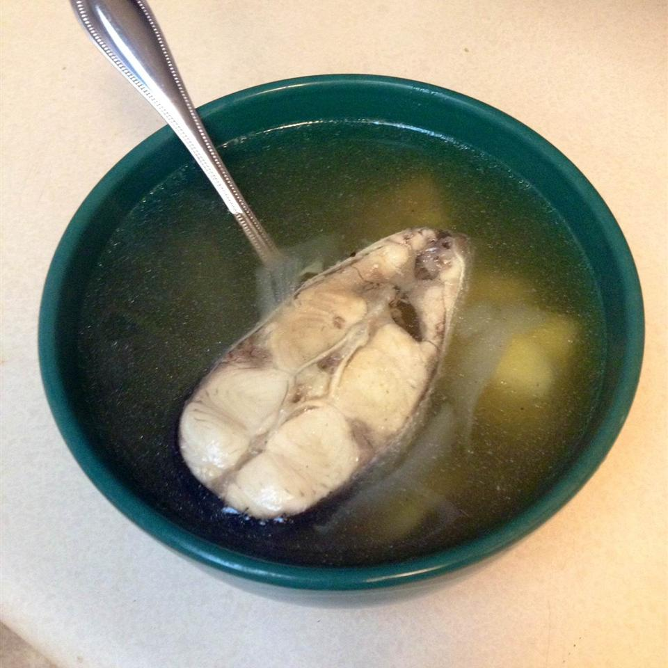

Evenings... that sorrowful time of the day. Chicken broth is all gone. And it only took you an hour to hunt down all liver balls... Even the emergency bowl of dry food is empty... Alas, The Hunger, hunger is almost omnipresent Humans can't even comprehend what an immence amount of concentration is required... too keep that Black Hole that is our stomach at bay. But do not fret fellow feline. I know The Way to supress it at least till morning. And that way is called: Ukha or common fish soup.
And here you go! A hearty meal to keep your darkness at bay!